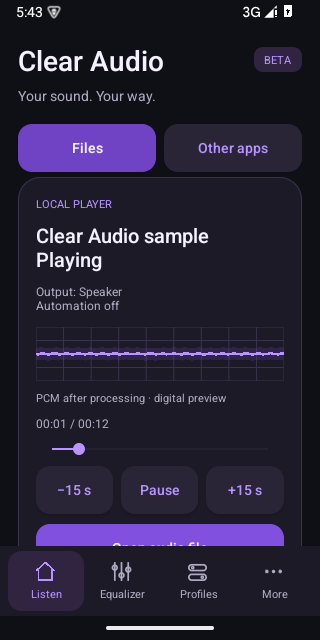
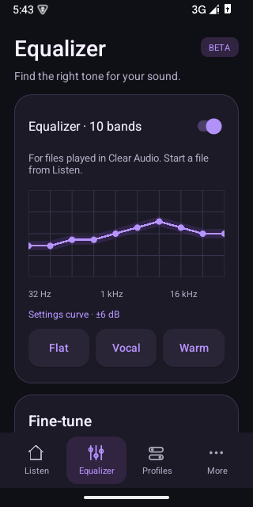
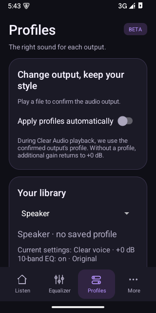

PRAXIS SCIENCE LAB / ANDROID
Clear Audio
Shape your sound with clear voice, a 10-band equalizer and local audio playback.
Development APK available Not yet available on Google Play.
Try Clear Audio
Version 0.12.0-dev · Android 9 or later · 22.5 MiB
Download Android APKA development build for testing. English is the default; Romanian and Spanish are available in More → App language. This is a direct download, not a Google Play release.
Listen to your own audio files with Clear Audio. Choose Clear voice, Balanced or Night mode, adjust a 10-band equalizer and compare Original with Processed at the same phone volume. The player includes pause and resume, seeking, 15-second skips and a sleep timer.
Save sound settings for the speaker, wired headphones, Bluetooth or USB. Optional automatic profiles follow the confirmed output category. The waveform shows actual digital samples from the local player. English is the default; Romanian and Spanish are available from More → App language.
Audio files are processed on your phone and local playback works offline. The 10-band EQ applies to files played in Clear Audio. Processing sound from other apps is experimental and depends on the phone and audio route; calls and independent per-app volume mixing are not supported.
This development version uses Google test ads on the More page, separately from playback controls. Ad requests are suspended when detected audio activity or a call makes the page ineligible. Playback remains available when ads or consent services are unavailable. Commercial advertising is not configured.
Clear Audio does not promise percentage-based volume boosts, measure sound pressure at your ear or guarantee hearing or speaker protection. Published by Praxis Science Lab.
Inside the app
Actual screenshots from version 0.12.0-dev (13).



Language
English by default. Choose English, Română or Español in More → App language.
Using the app
Start at a comfortable, moderate device volume and compare the same passage. Digital gain and the configured sample-peak limiter do not establish a safe acoustic level or guarantee speaker protection. Clear Audio is not a hearing test, hearing aid or calibrated sound-level meter. The 10-band EQ is available for the local player; external-app processing has device-dependent limits.
Praxis Science Lab is the publishing brand used by Traian Anghel. For support or privacy questions, email traiananghel@gmail.com. Include the app name and version. Do not send passwords, medical records, private recordings or other sensitive information.